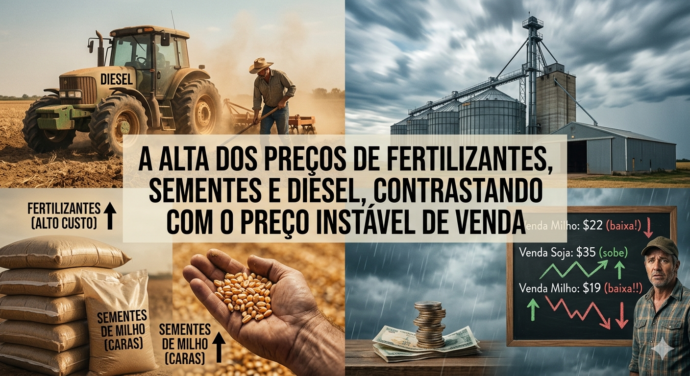

Três componentes essenciais na planilha do produtor registram patamares elevados:
Fertilizantes: Sendo o Brasil altamente dependente da importação de NPK (Nitrogênio, Fósforo e Potássio), o mercado interno sofre diretamente com as tensões geopolíticas globais, flutuações cambiais (dólar alto) e custos de frete internacional. O preço desses nutrientes agrícolas segue pressionado.
Diesel: O combustível é o coração logístico e operacional do campo. Com reajustes constantes nas refinarias, o encarecimento do diesel impacta tanto o preparo do solo e a colheita (maquinário) quanto o escoamento da safra até os portos e centros de distribuição.
Sementes: O desenvolvimento de biotecnologias e sementes geneticamente modificadas de alta performance elevou o valor desse insumo. Embora entreguem maior teto produtivo e resistência a pragas, o investimento inicial por hectare aumentou consideravelmente.
Volatilidade das Commodities: Os preços da soja, do milho e do algodão respondem à Bolsa de Chicago (CBOT). Fatores como superconfras em outras regiões do mundo (ex: recomposição da produção nos EUA e Argentina) e variações na demanda chinesa puxam as cotações para baixo.
Margem Esmagada: O produtor se vê em uma encruzilhada: gastou muito mais para plantar a safra, mas o valor que o mercado oferece pelo produto final na hora da colheita muitas vezes mal cobre o Custo Operacional Efetivo (COE).